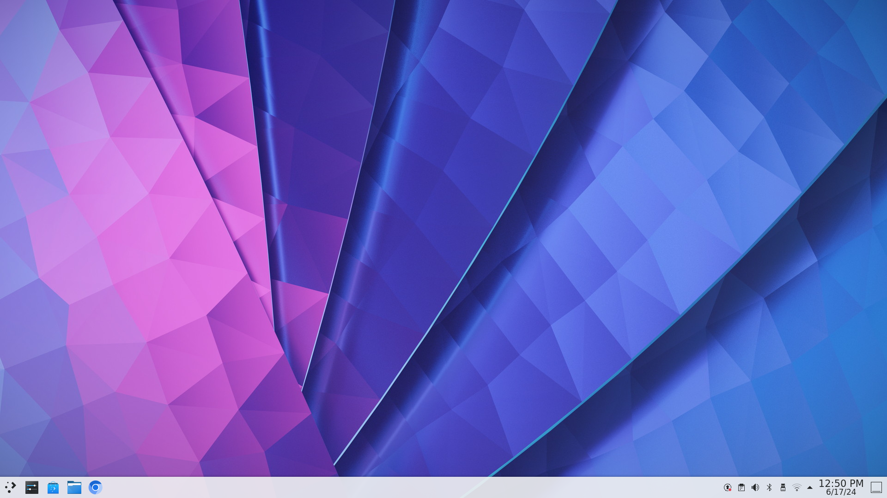
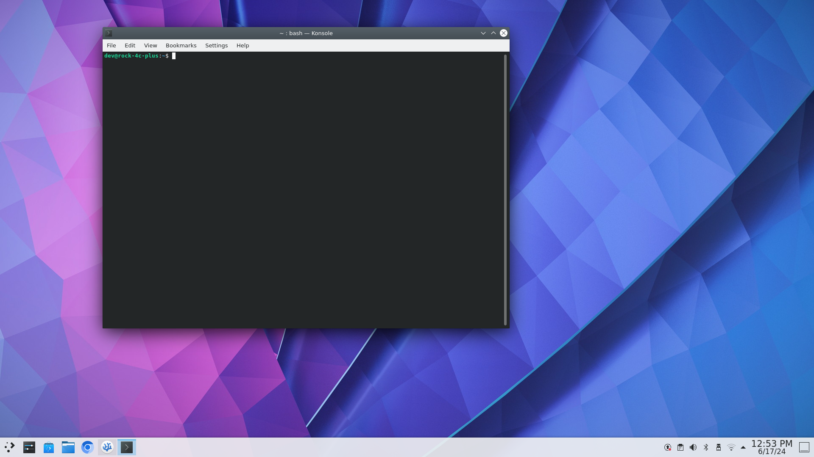

Getting familiar with the Rock C4+ and Debian OS
This page will give useful information for navigating the Debian OS on the Rock C4+.
Note
When ever you see the following syntax:
$ commandor> output
$indicates a command to run from the commandline, you don't type the$>indicates an output produce on the commandline
Getting Started
-
Once Keyboard and mouse are connected and the HDMI cable is plugged into port closet to the audio jack, you can plug in the USB-C power cable.
-
To login, use the
rockaccount and provide the following passwordtoor -
Once logged in you will be greeted with the following view.

-
Now, you need to open a terminal, press the following keys, ctrl+t, to open a terminal.

-
You can launch this workbook from the terminal now, or by double clicking the icon on the desktop.
$ workbook &
*Note
workbookis the a command that will launch the web browser with the workbook url, this is local page.&ersand, tells the shell to run the preceeding process in the background.